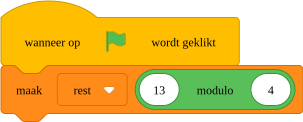

|
Overzicht van herbruikbare opdrachtblokken IndexFunctiesAlgemeen
Uitleg functies Een functie is en groep van instructies die samen een taak uitvoeren. Je kan functies gebruiken om je programma in kleinere stukjes op te hakken zodat het makkelijker is om te lezen. Ook zijn functies handig als je dezelfde groep instructies op meerdere plaatsen in je programma nodig hebt. Voorbeeld Stel dat je een programma maakt om je huiswerk te maken. Je zou dan de volgende functies kunnen maken:
Je programma wordt dan als volgt: Programmeer wat er moet worden gedaan voor de functie
Programmeer wat er moet worden gedaan om taalhuiswerk te maken. Programmeer wat er moet worden gedaan om in je agenda te zoeken. Het resultaat van de functie is een lijst van alle opdrachten die op de opgegeven datum moeten worden gemaakt. Voer alle functies in de juiste volgorde uit. Voorbeelden voor het maken van een functie
Voorbeeld [Mijn blokken] TODO
Voorbeeld functies Voorbeeld:
Voorbeeld functies Voorbeeld: X-as
Uitleg x-as X wijst de plek van links naar recht op het scherm.
ToDo ToDo Y-as
Uitleg y-as
ToDo ToDo Variabelen
uitleg variabelen Met variabelen kan je je programma vertellen om dingen te onthouden. Een variabele is een plekje in het geheugen van de computer waarin je een waarde kan bewaren. Bijvoorbeeld de score of de uitkomst van een som. Maken van een variabele Om een variabele te kunnen gebruiken, moet je hem eerst maken. Dit doe je door op maak variabele te klikken.
Je krijgt nu een formulier waarin je de variabele een naam kan geven. In dit voorbeeld score.
Gebruiken van een variabele Je krijgt nu een nieuwe bouwsteen die je kan gebruiken in je programma.
ToDo ToDo Events
Een gebeurtenis is iets dat door de computer wordt herkend en waarmee je een blok in je programma kan starten. De gebeurtenis wanneer op De gebeurtenis wanneer spatiebalk is ingedrukt wordt herkend als de spatiebalk wordt ingedrukt. De acties onder deze gebeurtenis worden dan uitgevoerd. Er zijn nog meer gebeurtenissen die je kan gebruiken. Deze vind bij gebeurtenissen in de balk links. ToDo ToDo Modulo functie
Uitleg modulo functie De modulo functie geeft de restwaarde van een gedeeld door som met gehele getallen. Bijvoorbeeld: Stel dat je 13 snoepjes wil verdelen over 4 vrienden. Iedereen krijgt dan 3 snoepjes, en er blijft er dan 1 over. Dus Voorbeeld:  De variabele met de naam rest heeft nu de waarde 1.
Uitleg modulo functie De modulo functie geeft de restwaarde van een gedeeld door som met gehele getallen. Bijvoorbeeld: Stel dat je 13 snoepjes wil verdelen over 4 vrienden. Iedereen krijgt dan 3 snoepjes, en er blijft er dan 1 over. Dus Bij arduino schrijf je de modulo functie als een -teken. Voorbeeld:
Uitleg modulo functie De modulo functie geeft de restwaarde van een gedeeld door som met gehele getallen. Bijvoorbeeld: Stel dat je 13 snoepjes wil verdelen over 4 vrienden. Iedereen krijgt dan 3 snoepjes, en er blijft er dan 1 over. Dus In python schrijf je de modulo functie als een -teken. Voorbeeld: ProgrammastructuurAlgemeen
Uitleg programmastructuur De programmastructuur bepaald in welke volgorde de opdrachten in je programma worden uitgevoerd. Er zijn verschillende soorten structuren. Sequentie In een sequentie worden de opdrachten opeenvolgend uitgevoerd. In Python ziet dat er als volgt uit: Conditie In een conditie worden opdrachten uitgevoerd als aan een voorwaarde is voldaan. Denk aan Als...Dan.... Voorbeeld: Het is belangrijk dat de computer weet welke opdrachten bij de condities horen en welke niet. Om aan te geven dat een opdracht bij een conditie hoort, moet je hem inspringen. Hiermee wordt bedoeld dat je met 4 spaties de regel naar rechts verplaatst. De laatste opdracht print("dit wordt altijd uitgevoerd") hoort niet bij de else. Dit kan de computer zien omdat deze regel niet is ingesprongen. Iteratie Een iteratie is een lus waarmee opdrachten meerdere keren na elkaar kunnen worden uitgevoerd. Voorbeeld: Inspringen
Uitleg inspringen Door opdrachten in te springen weet de computer waar een opdracht bij hoort. Inspringen doe je door aan het begin van een regel spaties in te voeren. Bijvoorbeeld: Belangrijk Het is belangrijk dat je bij het programmeren goed oplet op het inspringen. Als je dit niet goed doet, werkt je programma niet. 
[NL] Licentie Informatie Voor al het materiaal in document geldt de licentie: Creative Commons Naamsvermelding-NietCommercieel-GelijkDelen 3.0 https://creativecommons.org/licenses/by-nc-sa/3.0/. Indien u toegang wilt tot de raw bewerkbare files om het materiaal naar uw eigen doel aan te passen, ons te helpen het materiaal te verbeteren, of het materiaal te vertalen, neem dan contact met CoderDojo Zoetermeer https://codeclub.org/en/clubs/4f8d36fb-7545-4ba9-b9fb-b379b6b87938 [EN] License Information All work in this document are licensed under the Creative Commons Attribution-NonCommercial-ShareAlike 3.0 https://creativecommons.org/licenses/by-nc-sa/3.0/. If you wish to gain access to the raw editable files in order to adapt our content to your own purposes, help us improve the content, or translate it, then please contact CoderDojo Zoetermeer https://codeclub.org/en/clubs/4f8d36fb-7545-4ba9-b9fb-b379b6b87938 .
Acknowledgements:
author(s): Ben Mens This document was created by CoderDojo Zoetermeer. The template design was inspired by the CoderDojo branding and visual identity, and incorporates elements from both organizations. We would like to thank CoderDojo Nederland for their their ongoing support of the CoderDojo community. |

 Y wijst de plek van boven naar beneden op het scherm.
Y wijst de plek van boven naar beneden op het scherm.


 Uitleg gebeurtenissen
Uitleg gebeurtenissen